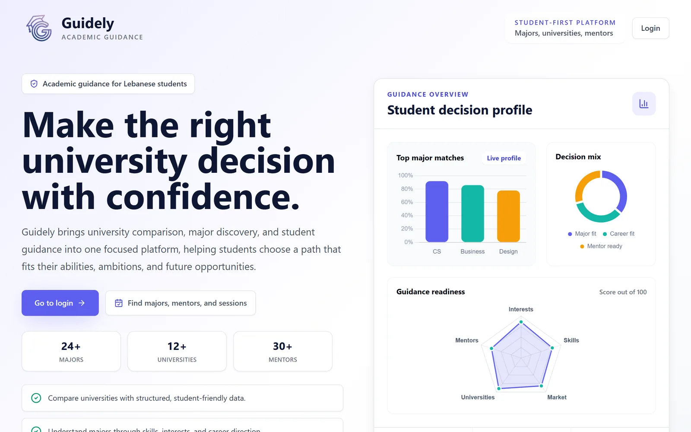

Featured · Team of 7Frontend lead
Guidely
A university-major guidance platform helping Lebanese students choose a major with local market data, a two-level scoring engine and mentor matching.
- My role
- Led the frontend team: owned the design system, component architecture and admin panel.
- What I built
- Majors page, search, pagination and the quiz flow, all against a shared Laravel API contract.
- Result
- Shipped in 37 days with a 7-person cross-functional team.